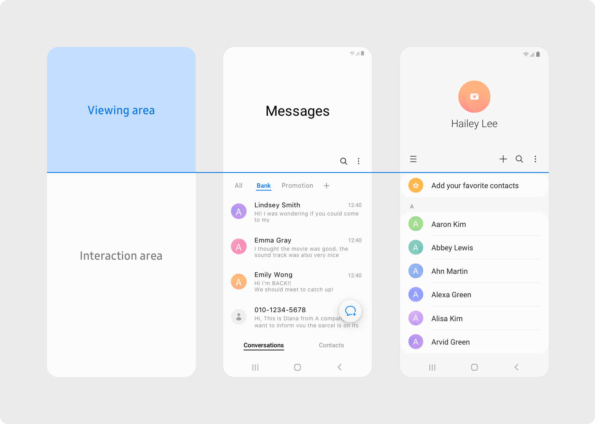

Welcome to the inaugural blog post of Project jrwnnnn_, your one-stop shop for...well, whatever pops into my head. Buckle up, because this website is a wild ride, cobbled together with equal parts inspiration and a serious case of the "I-should-be-doing-something-productive" blues.
Why waste perfectly good internet real estate on something as mundane as my real name? Project jrwnnnn_ sounds way cooler, obviously. Plus, it keeps people confused (intrigue is key, right?).
But seriously, why this website? Let's be honest, boredom is a powerful motivator. But hey, beyond the existential dread of having nothing to do, there are some actual benefits:
- Bragging Rights (Maybe): Having a website is the 21st-century equivalent of showing off your Pokémon card collection – a digital portfolio to prove I (hopefully) haven't been slacking off completely.
- Public Eye: Who doesn't crave a little bit of validation? Sharing my work lets the internet (or at least anyone who stumbles onto this website) shower me with praise (or at least constructive criticism. Please be gentle, I have feelings).
- Blogging for Beginners: Apparently, this whole "blogging" thing is a thing. Might as well give it a whirl, see if I can become a viral internet sensation (famous for what, exactly, is anyone's guess).
What can you expect from Project jrwnnnn_? Honestly, your guess is as good as mine. This website came together faster than a free slice of pizza at an office party, so features and content are definitely a work in progress. Right now, we're rocking a project tracker, a blog (shocking, I know), and even a fancy stats page to show off my impressive (or concerning) amount of time spent coding. Think of it as a digital laboratory, where experiments happen and who knows what glorious (or gloriously awful) creations might emerge.
As for design inspiration? Well, being a programmer and all, I channeled my inner hacker with a terminal-inspired look. Oh, and there's that whole "giant text when you scroll" thing – because apparently, I think Samsung's app design choices are peak aesthetics. Hey, to each their own, right?

Image by Samsung.
So, that's the scoop on Project jrwnnnn_. Stay tuned for more blog posts, project updates, and possibly even a complete website redesign (inspired by something other than my phone, maybe).